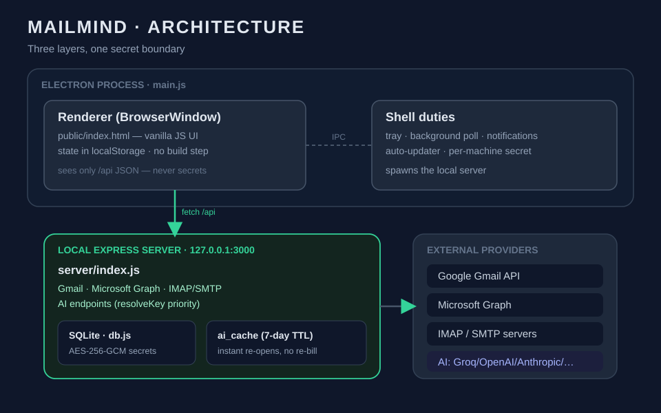
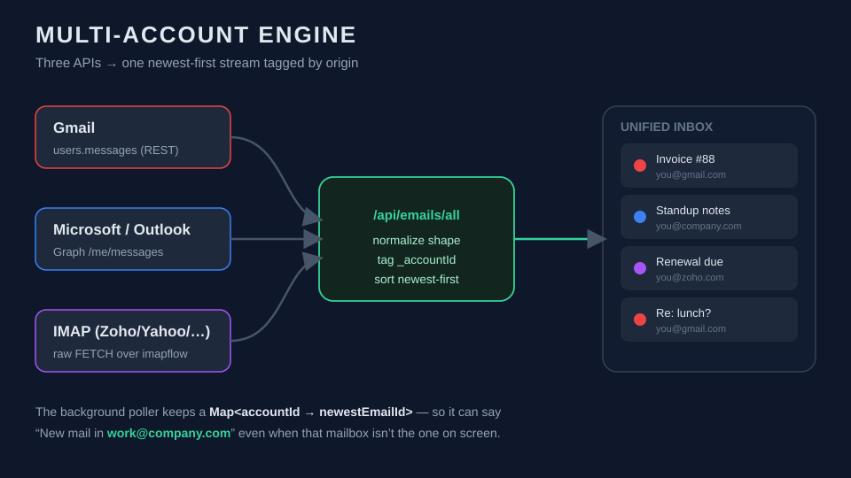
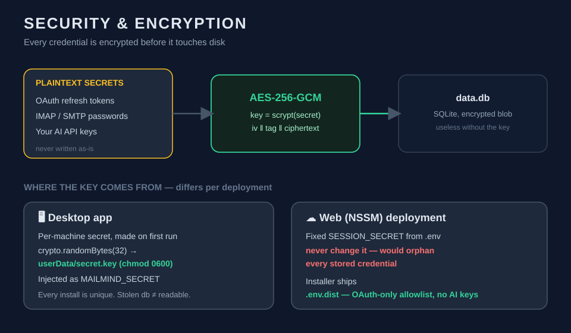
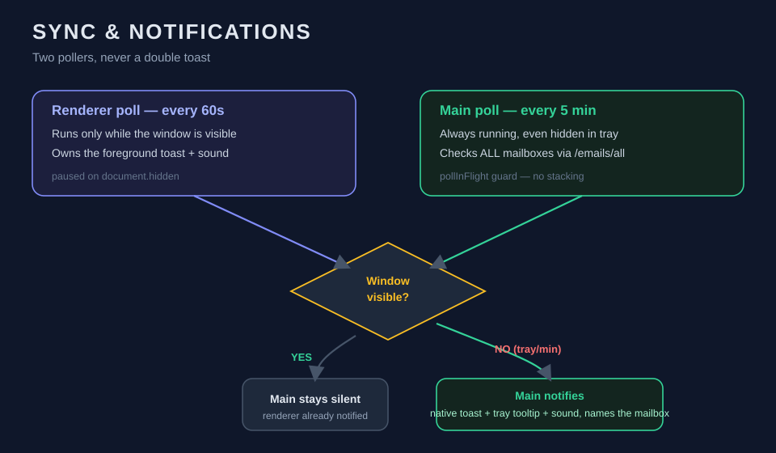

The one-paragraph version
Mailmind is a desktop email client that puts three mailbox worlds — Gmail, Microsoft/Outlook, and any IMAP server (Zoho, Yahoo, custom) — behind one keyboard-driven interface, then adds an AI layer that can summarize threads and draft replies using whichever provider you bring (Groq, OpenAI, Anthropic, Gemini, or Mistral). It runs as a tray app, syncs in the background, auto-updates from GitHub Releases, and stores every credential AES-256-GCM-encrypted on your own machine. There is no Mailmind server holding your mail. This post is the architecture tour.
1. The shape of the thing
Most "Electron email clients" are a React SPA stuffed into a BrowserWindow. Mailmind is deliberately split into three cooperating layers, each with one job:

main.js— the Electron shell. Spawns the server, owns the window, the tray, background polling, notifications, and the auto-updater. It is the only layer that touches the OS.server/index.js— a local Express API. Talks to Gmail, Microsoft Graph, and IMAP/SMTP; runs the AI endpoints; owns the SQLite database. It listens on127.0.0.1:3000and nothing else.public/index.html— the entire frontend. Vanilla HTML/JS, no framework, no build step. State lives inlocalStorage. The whole UI — list, reader, compose, reply, AI panel, settings — is one file.
Why a local web server inside a desktop app instead of calling APIs straight from the renderer? Because it cleanly isolates secrets. OAuth tokens and IMAP passwords never enter the browser context. The renderer only ever sees /api/... JSON; the keys live one process over, in a Node server that the renderer can't read.
The same server/index.js also runs as a web deployment behind NSSM + Cloudflare Tunnel — so the codebase is simultaneously a desktop app and a self-hostable web app. That dual life drives a lot of the design decisions below.
2. The multi-account engine
A mailbox in Mailmind is a row in a SQLite accounts table with a type (gmail | microsoft | imap), a plaintext email for labeling, and an encrypted secret blob holding the actual tokens or credentials.

The clever bit is the aggregation endpoint, /api/emails/all. Each provider has wildly different APIs — Gmail's REST users.messages, Microsoft Graph's /me/messages, and raw IMAP FETCH — so the server normalizes all three into one email shape, then tags every message with _accountId and _accountEmail. The frontend (and the background poller) can then treat "all my inboxes" as a single newest-first stream without caring where each message came from.
That tagging is what makes true multi-mailbox background sync possible: the tray poller keeps a Map<accountId, newestEmailId> and can tell you "New mail in work@company.com" even when that account isn't the one open on screen.
3. Bring-your-own-AI
Mailmind ships no AI keys. AI is opt-in and the key is yours. The resolution order in resolveKey() is:
- Request-supplied key (passed from the UI for a one-off call)
- Database setting (your key, saved encrypted in Settings → AI Features)
- Environment fallback (only the self-hosted web deployment uses this)
So the public desktop installer carries zero model credentials — users paste their own free Groq key (or any provider) and it's encrypted at rest like everything else. AI results are cached locally in an ai_cache table with a 7-day TTL, so re-opening the same thread is instant and free.
This is also a privacy property: the only time email content leaves your machine for AI is the moment you explicitly click "Analyze" or "Draft reply," and it goes straight to the provider you chose — never through us.
4. Encryption: the part that can't be casual
Every stored secret — OAuth refresh tokens, IMAP/SMTP passwords, your AI API keys — is encrypted with AES-256-GCM before it touches disk.

The encryption key is derived (scrypt) from a secret that is handled differently in each deployment:
- Desktop:
main.jsgenerates a per-machine secret on first run (crypto.randomBytes(32)), writes it touserData/secret.keywith0600permissions, and injects it into the spawned server asMAILMIND_SECRET. Every install has a unique key; a stolendata.dbis useless without the matchingsecret.key. - Web (NSSM): uses a fixed
SESSION_SECRETfrom.env— which is why that secret must never change (rotating it would orphan every stored credential).
There's a hard rule in the build: the installer bundles .env.dist, not .env. .env.dist is an OAuth-only allowlist (GOOGLE_*, MICROSOFT_*, ZOHO_*, YAHOO_*) — no AI keys, no SESSION_SECRET. The live secrets file is only ever used by the private web deployment. Shipping the wrong file would leak production secrets to every downloader; the allowlist makes that mistake structurally hard to make.
5. The desktop experience nobody sees
A surprising amount of engineering went into things that are invisible when they work:

Tray-first lifecycle. Closing the window doesn't quit — it hides to the tray and keeps syncing, like Slack or Discord. That single behavior caused the trickiest bug in the project: because win.on('close') called preventDefault() to hide the window, it also cancelled app.quit() and the auto-updater's quitAndInstall() — so updates failed with "Mailmind cannot be closed." The fix was an isQuitting flag set on every genuine exit path, plus an NSIS customInit hook that force-kills any running instance (taskkill /F /T) before the installer copies files — covering even manual installs that can't run in-app code.
No double notifications. The renderer polls every 60s when visible; the main process polls every 5 min always. To avoid two toasts for the same email, the main-process poller stays silent whenever the window is actually visible (win.isVisible() && !win.isMinimized()) and only speaks up for the background/minimized/tray states the renderer can't cover.
Auto-update from GitHub Releases. electron-updater checks the public repo on launch; the release flow is bump → npm run dist → tag vX.X.X → gh release create with the .exe, .blockmap, and latest.yml. Killing the spawned server process tree before handing off to the updater is what stops orphaned node.exe processes from holding port 3000 and breaking the next launch.
6. Counting users without watching them
The newest addition is anonymous usage analytics, and it's a case study in restraint.
The goal was small: how many people are actually using Mailmind? The temptation in an email client is to collect a lot — names, addresses, engagement. We collect almost nothing.
On launch (opt-out, toggle in Settings → Data & Privacy), the app sends a single Google Analytics 4 event containing exactly two things:
- a random install ID generated locally — not linked to any name, email, or account
- the app version
No email address. No mail content. No personal data of any kind. The install ID is just a coin-flip-random 64-character string stored next to the encryption key; it lets GA4 count distinct installs without knowing a single thing about who you are. It's the smallest possible answer to "how many users," and nothing more.
What I'd tell another solo builder
- A local server inside your Electron app is a feature, not overhead. It's the cleanest secret boundary you'll get, and it gives you a self-hostable web app for free.
- Normalize at the edge. Three email APIs became sane the moment everything got mapped to one shape and tagged with its origin.
- The lifecycle bugs are the real bugs. Tray hide-vs-quit, update handoff, orphaned processes, double notifications — none of it shows in a demo, all of it shows in production.
- Collect the minimum. For an email client, trust is the product. The analytics that ship are the analytics you'd be comfortable explaining in one sentence.
Mailmind is built with Node.js/Express, vanilla JS, Electron, and better-sqlite3. Installer and source: github.com/Callmesupratim/mailmind.